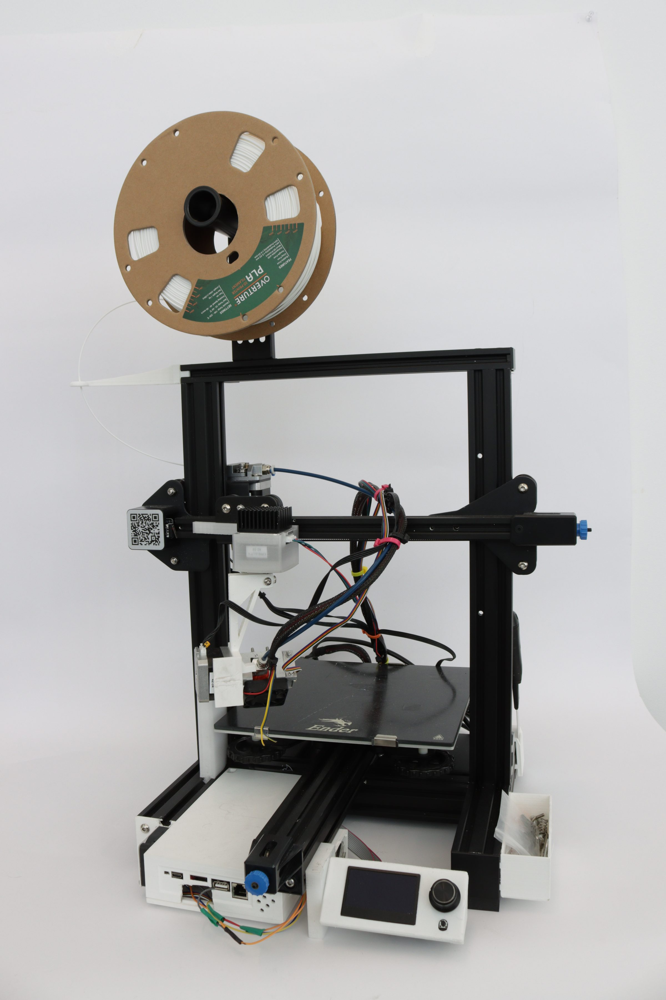
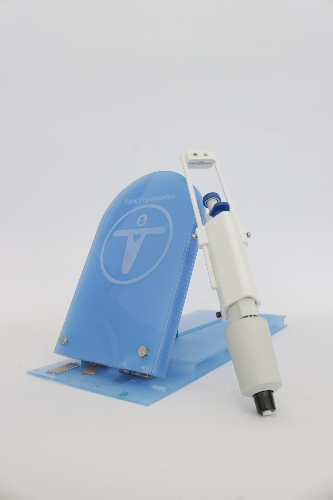
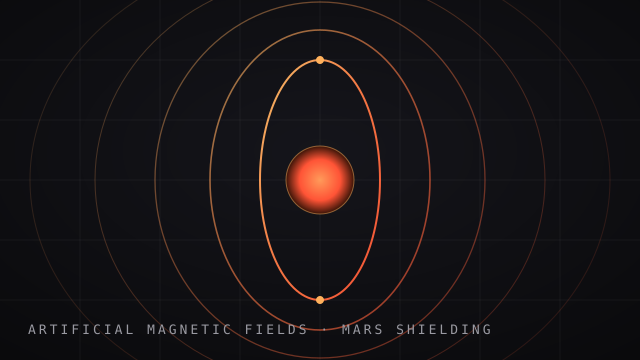
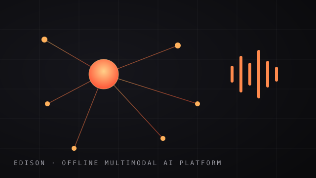
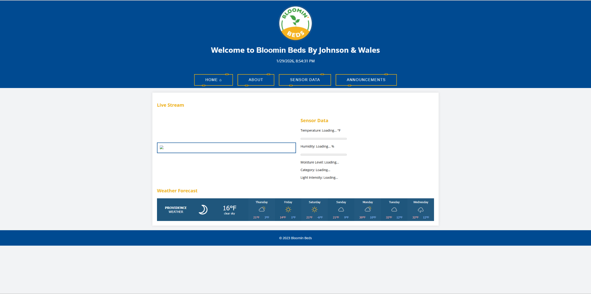
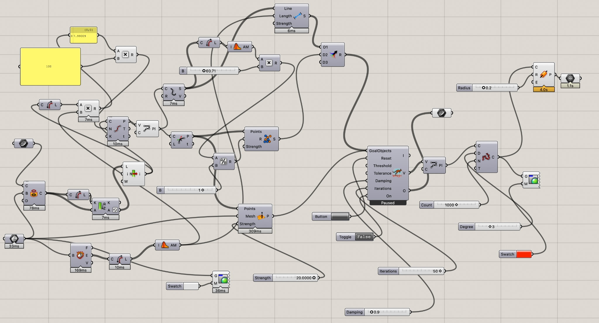
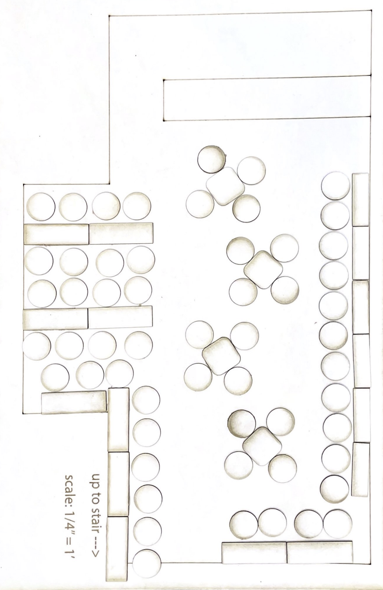

EcoPrint — 5-Axis 3D Printing
Manufacturing-innovation study in multi-axis additive workflows with a measured 37–44% support-material reduction.
↓ 44% peak wastePortfolio · 10 case studies
A focused body of product design work across advanced manufacturing, medical and health-tech tools, applied robotics, and computational design. Every project is framed the same way: the problem, the process, and the measurable outcome.

Manufacturing-innovation study in multi-axis additive workflows with a measured 37–44% support-material reduction.
↓ 44% peak waste
User-centered medical concept for repetitive-strain reduction, validated through comparative prototype testing.
3 prototypes tested
Autonomous 8-legged construction robot with a structured DIG workflow, validated in ROS 2 + Gazebo.
★ JWU Symposium 2024
Parametric simulation of deployable radiation-shielding systems and complex field-control geometry.

Fully offline multimodal platform integrating LLM inference, RAG memory, voice, and image generation.

Physical product concepting focused on modularity, manufacturability, and practical everyday use.

Sensor-driven monitoring platform pairing Raspberry Pi hardware with a real-time dashboard UX.
★ JWU Symposium 2024
Computational design exploration in procedural growth, collision logic, and form generation.

Observation-led spatial redesign focused on layout flow, seating access, and ADA compliance.

Business modeling and launch planning for a specialty conversion-service concept.